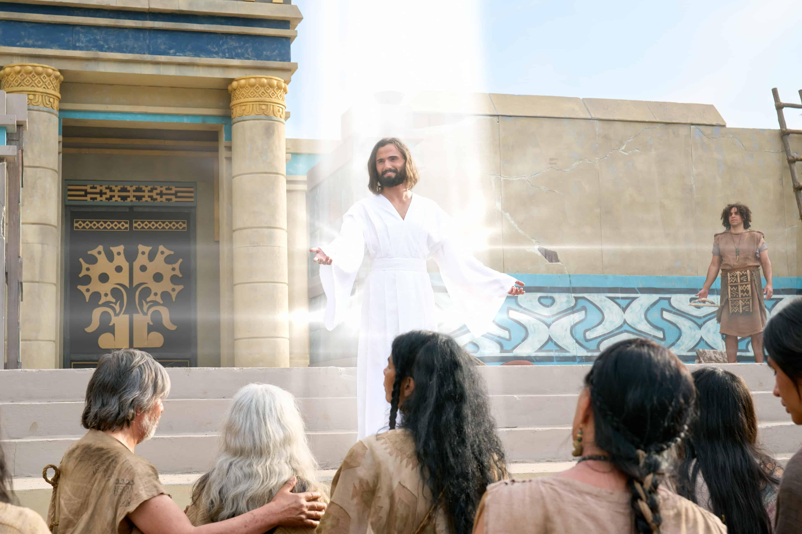

WHY ANOTHER TESTAMENT?
A Witness of Jesus Christ
The Book of Mormon is called another testament of Jesus Christ because its prophets testify that He lived, died, and lives again. Its pages record His teachings, His gospel, and His appearance to the people of ancient America.
Together with the Bible, the Book of Mormon provides another witness of the Savior and invites every person to learn of Him, follow Him, and come unto Him.
Explore the introduction →DAILY STUDY
Verse of the Day
WHY DOES IT MATTER?
Why Is the Book of Mormon Important?
The Book of Mormon is important to Latter-day Saints because it testifies of Jesus Christ and teaches the fulness of His gospel. Its prophets taught faith, repentance, baptism, receiving the Holy Ghost, and enduring to the end.
Its message is not limited to one people or one time. It invites people everywhere to come unto Christ and discover for themselves whether its message is true.
“The Book of Mormon is the keystone of our religion.” — Joseph Smith
DISCOVER MORE
Explore the Book of Mormon
Follow its history, discover its message, and learn more about Jesus Christ.
COME UNTO CHRIST
Discover More for Yourself
The Book of Mormon is an invitation to learn about Jesus Christ and draw closer to Him. Explore additional resources, teachings, and opportunities to learn more.
Visit ComeUntoChrist.org